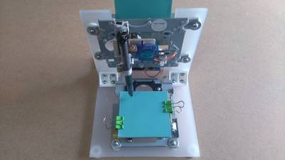

2015-12-08 - Nº 32

Editorial
Aqui está a Newsletter Nº 32 no seu formato habitual. Foram adicionados botões de partilha nas várias redes sociais, se gostar da Newsletter partilhe-a!
Todas as Newsletters encontram-se indexadas no link.
Esta Newsletter tem os seguintes tópicos:
Esta semana foi anunciada a compra por parte da NXP da Freescale criando um líder na área dos semicondutores de alto desempenho. O Satélite AKATSUKI voltou a estar operacional e em condições de enviar dados do clima em Vénus para a Terra. Ficámos também a saber que trabalhos no sentido de atingir o Manto da Terra foram outra vez reiniciados e vão ser tentados num local designado por "Atlantis Bank" onde uma broca irá tentar furar o 1.5 Km de rocha até ao Manto. Finalmente e ao fim de vários anos de desenvolvimento foi lançada a versão final do PHP - a versão 7.0.0. Por fim a BQ lança as especificações do Cyclone PCB Factory 2.0 - uma pequena CNC para construir placas de circuito impresso. Na Newsletter desta semana falamos de vários projetos de maker que poderão ser interessantes de explorar. Iremos construir um circuito que é ativado por som.
 João Alves ([email protected])
João Alves ([email protected])
O conteúdo da Newsletter encontra-se sob a licença  Creative Commons Attribution-NonCommercial-ShareAlike 4.0 International License.
Creative Commons Attribution-NonCommercial-ShareAlike 4.0 International License.
Novidades da Semana ^

"NXP Semiconductors N.V. (NASDAQ:NXPI) and Freescale Semiconductor, Ltd. (NYSE:FSL) today announced the completion of the merger pursuant to the terms of the previously announced merger agreement from March 2015. The merger has created a high performance mixed signal semiconductor industry leader, with combined revenue of over $10 billion. The merged entity will continue operations as NXP Semiconductors N.V. (NASDAQ:NXPI) and has become the market leader in automotive semiconductor solutions and in general purpose microcontroller (MCU) products."
"The Japan Aerospace Exploration Agency (JAXA) performed the attitude control engine thrust operation of the Venus Climate Orbiter “AKATSUKI” for its Venus orbit insertion from 8:51 a.m. on December 7 (Japan Standard Time). As a result of analyzing data transmitted from the orbiter, we confirmed that the thrust emission of the attitude control engine was conducted for about 20 minutes as scheduled. The orbiter is now in good health. We are currently measuring and calculating its orbit after the operation. It will take a few days to estimate the orbit, thus we will announce the operation result once it is determined."
"Jules Verne would have dug this plan: drill into the sea floor, through kilometres of the planet’s rocky crust to penetrate the denser underlying mantle. It is one of geology’s classic quests, conceived almost 60 years ago, at the peak of the plate-tectonics revolution. Since then, many have attempted it and failed. But an expedition starting this month is taking up the challenge once again. In early December, the drill ship JOIDES Resolution will depart Colombo, Sri Lanka, and head for a spot in the southwestern Indian Ocean known as Atlantis Bank. There, it will lower a drill bit and try to screw it through 1.5 kilometres of rock, collecting a core sample as it goes. If all goes well, future expeditions — not yet scheduled or funded — will return and finalize the push into the mantle (see ‘Deep understanding’)."
"The PHP development team announces the immediate availability of PHP 7.0.0. This release marks the start of the new major PHP 7 series. (...) It is not just a next major PHP version being released today. The release being introduced is an outcome of the almost two years development journey. It is a very special accomplishment of the core team. And, it is a result of incredible efforts of many active community members. Indeed, it is not just a final release being brought out today, it is the rise of a new PHP generation with an enormous potential. Congratulations everyone to this spectacular day for the PHP world!"
"Después de varios meses trabajando en ello, Cyclone PCB Factory 2.0 ha sido publicada. Esta versión ha sido “esponsorizada” por BQ. Es el resultado del trabajo conjunto de Carlos García Saura, autor de la primera Cyclone, junto a varios ingenieros del Departamento de Innovación y Robótica de BQ, fundamentalmente Pedro de Oro Martín y Santiago López Pina (Darkomen)."
Ciência e Tecnologia ^
"The world's first sonic tractor beams that can lift and move objects using soundwaves have been built by a team that includes researchers at the University of Sussex. Tractor beams are mysterious rays that can grab and lift objects. The concept was created by science-fiction writers but has since come to fascinate scientists and engineers. Researchers at the Universities of Sussex and Bristol, in collaboration with Ultrahaptics, have now built a working tractor beam that uses high-amplitude soundwaves to generate an acoustic hologram that can pick up and move small objects. The technique, published in Nature Communications today (27 October 2015), could be developed for a wide range of applications. For example, a sonic production line could transport delicate objects and assemble them, all without physical contact. Or a miniature version could grip and transport drug capsules or microsurgical instruments through living tissue."
"Substantially smaller and longer-lasting batteries for everything from portable electronic devices to electric cars could be come a reality thanks to an innovative technology developed by University of Waterloo researchers. Zhongwei Chen, a chemical engineering professor at Waterloo, and a team of graduate students have created a low-cost battery using silicon that boosts the performance and life of lithium-ion batteries. Their findings are published in the latest issue of Nature Communications. Waterloo's silicon battery technology promises a 40 to 60 per cent increase in energy density, which is important for consumers with smartphones, smart homes and smart wearables."
"Metallophones such as glockenspiels produce sounds in response to contact. Building these instruments is a complicated process, limiting their shapes to well-understood designs such as bars. We automatically optimize the shape of arbitrary 2D and 3D objects through deformation and perforation to produce sounds when struck which match user-supplied frequency and amplitude spectra. This optimization requires navigating a complex energy landscape, for which we develop Latin Complement Sampling to both speed up finding minima and provide probabilistic bounds on landscape exploration. Our method produces instruments which perform similarly to those that have been professionally-manufactured, while also expanding the scope of shape and sound that can be realized, e.g., single object chords. Furthermore, we can optimize sound spectra to create overtones and to dampen specific frequencies. Thus our technique allows even novices to design metallophones with unique sound and appearance."
Modelos 3D ^
Com a disponibilidade de ferramentas que permitem dar azo a nossa imaginação na criação de peças 3D e espaços como o thingiverse para as publicar, esta rubrica apresenta alguns modelos selecionados que poderão ser úteis.
Dendra Shelving System (http://www.thingiverse.com/thing:1155502)
Dendra is a hexagonal-based shelving system that uses any 18mm laminates to create beautiful arrangements for your home or studio near a wall or creating a beautiful division.
Customize your Dendra shelves by printing the nodes in colors matching your space palette and buying some nice plastic-finished or wood-finished lamminates!
You will need to plan your array before printing, since there are 10 diferent node pieces to chose from, and you will need to print the front and back node piece to hold two panels together.
The pieces are designed to hold easy-to-cut 30cm x 40cm shelves (this way a 244cm x 122cm board is 96.7% used, with the cutting waste being the only one!), but you can try with other measures, since the thickness is the same.
*For the example array you will need to print 50 pieces and buy only one 244cm x 122cm board.
Geometry Connectors - Icosahedron, Tetrahedron, Cube (http://www.thingiverse.com/thing:1159875)
These geometric connectors allow you to use quarter-inch dowel rods to make different shapes! Here are connectors for an Icosahedron, Tetrahedron, and a Cube.
YouTube: https://youtu.be/uyxaQ2J6ByM Instructables: http://www.instructables.com/id/3D-Printed-Geometry-Connectors/
Universal Rover Wheel assembly (http://www.thingiverse.com/thing:1177511)
This is a stepping stone for a larger project I'm working on. Each wheel is powered independently, and has it's own steering. The outer wheel rides on 6 bearings and is powered by a Pololu 25D 6V motor. I used their drive shaft adapter to attach the outer wheel to the motor. The outer tire is made from Sainsmart TPU. The metal hub on the servo was purchased from Servocity. I have a printable version, but I would recommend the aluminum version that Servocity cells. The servo mount is downloaded from Servocity's website. I made some modifications to facilitate printing and beefed it up a bit. If you have the means, I would highly recommend using their aluminum servo mounts. I expect that I will be purchasing them soon.
You could probably get away with not using the inner set of bearings. My goal with this was to make it low maintenance, and to function well under stress. So far it has performed great. I think you could get away with using printed bearings if you didn't want to spend the money. If someone decides to build this, let me know and I'll get a parts list together.
https://youtu.be/uo7baWGCqM4
https://youtu.be/xI0_R3pOjqM
https://youtu.be/B9NgX9r7XNI
Circuitos ^
Aqui é apresentado um circuito simples que poderá ser construído com componentes.
Circuito Ativado por Som
Iremos construir hoje um circuito ativado por som de palmas. Este permite abrir ou fechar um circuito através de palmas.
Este circuito é feito recorrendo a um sensor de som, que detecta o som alto (de palmas) como entrada e envia-o para o circuito, a fim de dar a saída. Quando o som é dado como entrada para o Mic, este é transformado em energia elétrica e faz acender o LED. O LED ao fim de algum tempo apaga-se automaticamente. O condensador de 100uF é usado para estabelecer este tempo. Para se aumentar a sensibilidade do Mic pode-se fazer variar a resistência variável que se encontra no circuito. O IC 555 foi configurado no modo mono-estável.
Esquemático
Componentes (BOM):
- 1x IC NE555
- 1x Resistência de 47K Ohms (R1)
- 1x Resistência de 1K Ohms (R2)
- 2x Resistência de 470 Ohms (R3, R4)
- 1x Resistência variável de 10K Ohms (RV1)
- 1x LED de 5mm Vermelho (D1)
- 2x Transístores NPN 2N2222A (Q1, Q2)
- 1x Condensador Electrólito de 100uF (C1)
- 2x Condensadores Cerâmicos de 100nF (C2, C3)
- 1x electrec Mic (MIC1)
Pin-out dos IC/Componentes
Links úteis:
Projetos Maker ^
Diversos Projetos interessantes.
Drink Cooling Coaster
"Keep your drink on a cooling coaster using Arduino."
Arduino Claw Machine
"The claw machine functions just like traditional claw machines in arcades, except my machine gives you more control and fairness. The game is based on a timer (there is an LCD indicating how much time is left) which is set to 55 seconds. Insert a quarter (can be set to free-play), and press start. You have 55 seconds to move and position the claw, grab a prize, return it to the “prize chute” and go for more. Once time runs out the claw closes, the gantry moves back to the ‘home position’ and the claw then opens dropping anything it might be carrying. Unlike the traditional Arcade claw machines, my DIY version gives you full control over this claw in the X,Y,Z axis and the claw grip itself. The only restriction is time. Personally, the game is more fun since it’s based less on one-time spatial judgment and more about motor skills and planning the best route for multiple prizes."
How to Make an Inexpensive 16 MHz Arduino Oscilloscope Using Excel and Your Computer Screen to Display
"Often an electronics hobbyist will design and build something only to find that it doesn't behave the way he or she intended. Sometimes in these situations the problem is related to an electrical signal, but that stuff moves at the speed of light! It's hard to troubleshoot. Wouldn't it be nice if you could just take a video of your signal, so you could actually see what is happening? Well, guess what? Over a hundred years ago a guy by the name of Karl Braun figured out how to do just that when he invented a machine called an oscilloscope. You can imagine that in the course of that hundred years, the technology has gotten better and better, and it has. The trouble is that the price reflects it. I can't afford one. Plus there is that other little matter of not knowing how it works internally or how to fix it when it breaks. I created this oscilloscope for those three reasons. If I build it, I know I can fix it cheap. I know what it does, so I know how to make it do stuff. Best of all, it's mine, so if I blow it up (nooooooo) I don't lose any friends, and if I want to use it at 3a.m. it's right here under my bed waiting."
Arduino Mini CNC Plotter Machine from dvd drives

"In this project I will show you how to easily build your own low-cost Arduino Mini CNC Plotter! This project is an update from my previous cnc, with better construction and with more accuracy. I decided to make this detailed guide to help you make it on a few easy steps. For the X and Y axes we will use two stepper motors and rails from dvd/cd drives and for the Z axis we will use a small servo motor that moves the pen up and down. For the mounting base we will use a small piece of plexiglass. You can easily attach a pen (or pencil) - irrespective of its thickness - on it. I tried to use an extension of cutting tool (e.g.Dremel) to engrave materials with no success. So this mini cnc can only be used as a small plotter and not as an engraver machine. The Arduino-based circuit is using the ATmega328 microcontroller, two L293 motor driver ICs and an usb to serial module. You can easily make it with the Arduino uno board and an breadboard. You can also use an Bluetooth module (e.g. HC-06) to print your texts (or images) wirelessly through your computer Bluetooth connection! Pretty cool huh?"
DIY F1 RC Race Car! V.2.0
"Hi I'm Dogoman, and In this Instructable I will be showing you how to make V.2.0 of my 1/18 F1 race car! With all new features including a rear differential, rear suspension, and new higher grip front and rear tires!"
DC Motor IR2104 H-BRIDGE
"H-Bridge has been designed around IR2104 IC from international Rectifier. The board has been made mainly for DC-Motor application. The driver can handle load up to 8-10Amps. I have tested this board with 36V DC supply . The circuit uses N Channel IR540 MOSFETS from international rectifier. IR540 requires large heat sink for 10Amps load. Board has shunt resistor to provide voltage proportional to current flowing through load. This can be later amplify and connect it to microcontroller."
Spread Spectrum Phased Array Sonar
"Motivated by success on other acoustic projects and by this brain transplant blog, a sonar project sprang to mind. A phased array sonar works in the same way as a phased array radar. Rather rotating the sensor to look direction, this is achieved by combining the signals from an array of fixed sensors each with different phases. Normally a large number (100s) of sensors are used. In astrophysics they are randomly sparsely populated. In this project only two ultrasonic receivers are used. Only one transmitter is used. The existing HC-SR04 sends out 8 40kHz pulses. In this hack, I'm replacing it with binary phased shifted key (BPSK) m-sequence with each key consisting of 5 pulses. This has better signal properties."
Awesome LED Mask
"Ever wanted to build an LED Mask? Here's how I built mine! Maybe it will spark your imagination."
DIY A4 Laser Engraver
"This "Get Ready For Win98" Laser Engraving Machine it's built using an old scanner, and an old printer. A laser engraving machine is a tool that uses lasers to engrave an object."
1.6W Mono Audio Amplifier
"1.6W Mono Audio Amplifier Project is based on TDA7231, which is class AB power amplifier with a wide range of supply."
Breathalyzer 2.Arduino
"For this project I made a breathalyzer powered by an Arduino UNO. This is a novelty item, while it does give you a reading on your Blood Alcohol Content you should never rely on this and if you are unsure of how drunk you are please never drive home. dYou blow into the hose, the LEDs tell you what level you are in (green, yellow, red) and then a receipt prints out telling you how drunk you are, and a number for a local taxi."
Arduino Pong!
"Hey Guys it's time to recreate the famous Pong Attari game using Arduino and some other components such as: Potentiometers, a couple of resistors, a button and a TV Out cable.All in 10 or less minutes! Let's get started"
Battery discharge protector cut-out switch with ATtiny85 for lead acid Car or Lipo battery
"As I need several battery protectors for my cars and solar systems I had found the commercial ones at $49 to expensive. They also use too much power with 6 mA. I could not find any instructions on the subject. So i made my own that draws 2mA."
PiDP-8, a PDP-8/I Replica
"Of all the PDP-8s, the 8/I is my favourite. Alas, getting a real one is impractical: they are pretty much impossible to obtain, and just as hard to maintain once you've found one. But asI learned from my $15 KIM-1 clone, making a replica is a good way to get involved with the inner guts of a vintage machine too. The idea of the PiDP-8 is to make it an open-source hardware project again."
Compras ^
Artigos do ebay ou de outras lojas online que poderão ser úteis em projetos. A informação aqui presente apenas serve para ajudar na aquisição dos componentes. O altLab não tem qualquer intervenção/participação em qualquer negócio aqui apresentado.
20 x Radial Lead 2Pins -50dB Stereo Unidirectional Electret Condenser Microphone
(http://www.ebay.co.uk/itm/191612834751) - £2.40
- Product Name: Uni-Directional Electret Condenser Microphone
- Sound Channel Number: Stereo
- Output Impedence: 2.2K Ohm
- Sensitivity: -50dB
- Body Size: 6 x 5mm / 0.24" x 0.2" (D*T)
- Pin Pitch: 2mm / 0.08"
- External Material: Metal
- Main Color: Silver Tone, Black
- Weight: 7g
Package Content
20 x Uni-Directional Electret Condenser Microphone
That's all Folks!